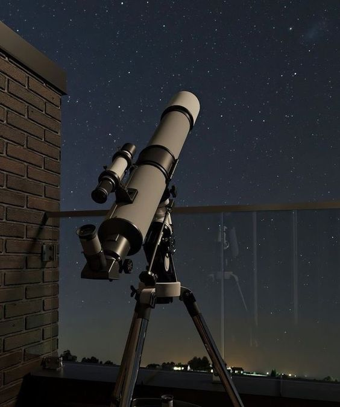

Hobbies-Astronomía

Amo la Astronomía, la idea de poder comprender el universo y todo lo que nos rodea, mi fascinacion empezó en la pandemia con videos de divulgación científica.
En 2022 entré a las olimpiadas fcpn de astronomia, obteniendo una mencion de honor.
¿Qué es la Astronomía?
Definición
Se conoce como astronomía a la ciencia que se dedica al estudio de los cuerpos celestes que pueblan el cosmos: las estrellas, los planetas, los satélites, cometas, meteoritos, galaxiasy toda la materia interestelar, así como sus interacciones y movimientos.
Saber más.jpg)